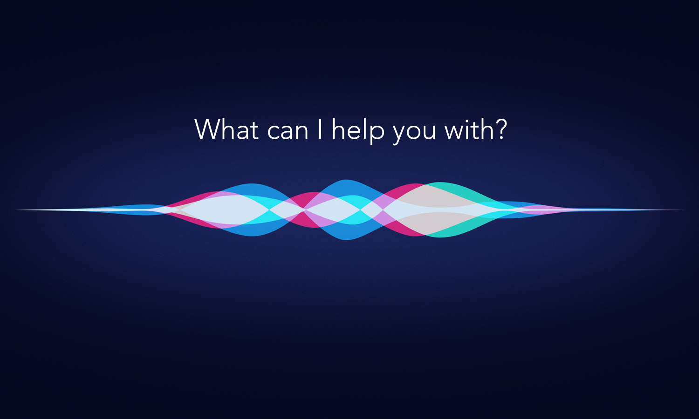

Erica Williams / July 21st, 2022
In class today we learned about Citizen Science and the work citizen scientists do. Citizen science is the practice of public participation and collaboration in scientific research to increase scientific knowledge. Through citizen science, people share and contribute to data monitoring and collection programs. We were split into groups and had to create a pesentation about an existing or new citizen science project. My partner and I did ours on a project about solar jets that shoot off of the sun. It was really cool to learn about. We used the website Zooniverse to find out about our project, which is a website that people can post about their projects and others can join in.
If you want to join a citizen science project of your own, click this link to explore!
Erica Williams / July 21st, 2022
The video below gives an up to date tutorial on developing a website, from design
principles to using different databases. The video is great for beginners or experts
trying to brush up on their skills. Check it out!
Erica Williams / July 20th, 2022
Today everyone participated in a scavenger hunt around campus. For the hunt, we were split into groups of two or three and we had to go around campus interviewing different people in different departments about how they use technology and data in their careers. My personal favorite interview was with Mike McGrath, an admissions officer for the college. He recongized me from the college prep workshop he held the day before and I felt that we were able to have a good conversation. In his department, they get lots of data for all the different students applying, and they use updated technology to be able to shift through all the data. He also mentioned how they use technology from years and years ago to improve their current systems. It really shows how technology is full circle.
Erica Williams / July 19th, 2022
Today in class we were tasked with creating a teachable machine that could accomplish a goal. We used the site 'Teachable Machine', which is a form of Machine Learning (a subsection of AI). In the teachable machine, the computer is able to recognize different images, poses, and audios and is able to tell the difference between all of them.
For my specific project, me and my partner Sophia decided to create a teachable machine with the goal of reading different people's emotions. We were able to track the emotions happy, sad, angry, shocked, thoughtful, and nuetral.
Click this link to check out the project
Outside of teachable machine, I think AI can be used for a multitude of things. One simple example is how when your typing out a message sometimes the phone suggests words to finish your statement based on previous messages you've typed. Another example is speech recognition. AI can also be used for more complicated objectives like navigating Mars.
Siri is a type of AI:
Erica Williams / July 19th, 2022
Elizebeth Smith Friedman was an American expert cryptanalyst and author who deciphered enemy codes in both World Wars. She is also known for helping solve international smuggling cases during Prohibition. Her career in the workforce lasted from 1916 and carried on throughout 1971 when she retired. Over the course of her career, she worked for the United States Treasury, Coast Guard, Navy, Army, and the International Monetary Fund. She has been called "America's first female cryptanalyst”.